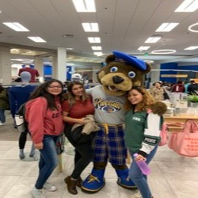
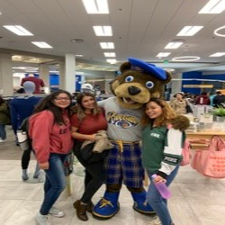
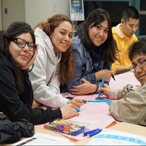
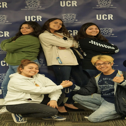
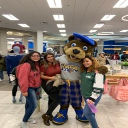
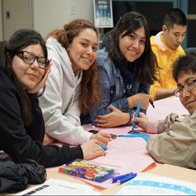
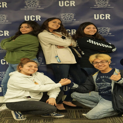

Veronica Hernandez
My name is Veronica Hernandez. I am a student attending University of California, Riverside that entered from high school. Coming in from high school is a new experience because there is a different atmosphere in college. In college, studying methods are more drastic and necessary. Being able to balance college life and a job is stressful yet manageable. I am currently working toward an Anthropology major with a double major in Linguistics, and a minor in Economics. Majoring in Anthropology is exciting. I took a Cultural Anthropology class my first year in college, and I found out that in order to do proper research on what it is one wants to observe it is best to go ahead and get involved. This is the best method for becoming a proper Anthropologist. My double major in Linguistics goes hand in hand with Anthropology because Linguistics deals with the study of language and how people communicate. Being able to understand how people from other cultures communicate with each other will help me live among them and comprehend their lifestyles. Minoring in Economics will give me an idea of what economics is. The requirements for this include taking between 16 and 28 units that are about this course.
Although I have no professional work experience, I do have a lot of experience volunteering and working with clubs and organizations. During my high school junior and senior year, I volunteered at the California Science Center in Los Angeles. During my time there I would assist any visitors that needed direction on where to go and how to get to the place they needed to go to. I felt like my time there was very helpful because it made me realize how much I truly enjoy helping people and being there for them. Once I volunteered there for the first time, I became aware of how much I enjoy volunteering. I have also volunteered at the Beach Clean-Up in Cabrillo Beach. During this time, I helped clean up the beach by collecting any trash that was lying around both the sand and grassy areas. Although cleaning up the beach was not technically helping people, it was helping the planet because there was a contribution of cleaning up other people’s garbage.
My two current years in college, I am a part of many different clubs and organizations. Project Sunshine is a club in which students get together and make care packages for pediatric patients. The care packages include gifts for children between the ages of 5 and 17, they are age appropriate toys that bring sunshine (hence the name, Project Sunshine) to the children. I am involved in an academic organization called NRHH which stands for National Residence Hall Honorary. In this org, we get together and recognize certain people, we also challenge ourselves to reach a certain amount of community hours, and we reach out to people who live on campus. I am also involved with the skate club, were skaters get together and practice skating together near the university’s most popular landmark, the UCR Belltower. This club ranges from skaters who are just beginning to people who have been skating since they were children, to peopl ewho are skating for the first time.
Experience
Volunteer
• Assisted people with directions
• Educated young children about the importance of science
• Navigated through the different sections in the Science Center
Student Homeless Aid Release Project
• Making care and hygiene packages for the Homeless community in Riverside
Project Sunshine
• Making care packages for Pediatric Patients
• Direct Services events, where we attend hospitals
• Bring Sunshine to young children and young adults
Education
University of California, Riverside
University of California, Riverside
University of California, Riverside
Portfolio
 






 